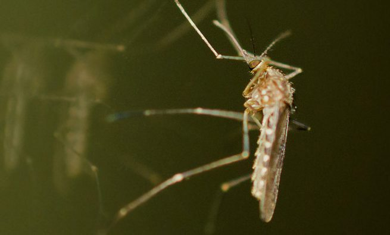

تب دنگی از سال ۲۰۰۹ در پاراگوئه بومیشده است. اداره نظارتبر سلامت ملی پاراگوئه با تشخیص اینکه این مشکل با فقدان یک سیستم قوی برای اطلاعرسانی خطرات مرتبط با دنگی با عموم تشدید شده است، دادههای مربوط به شیوع دنگی را باز میکند. محققان با استفاده از این دادهها، یک سیستم هشدار اولیه ایجاد کردند که میتواند شیوع تب دنگی را از یک هفته قبل تشخیص دهد. مدل برگرفته از داده میتواند شیوع دنگی را در سطح شهر در هر شهر یا منطقه در پاراگوئه پیشبینی کند - تا زمانی که داده مربوط به شیوع بیماری، آبوهوا در دسترس باشد.
پیشینه و زمینه
تمرکز بر مسئله / زمینه کشور
پاراگوئه یک کشور گرمسیری تا نیمه گرمسیری با جمعیت ۶.۷ میلیون نفر است که تقریباً یکسوم آنها در پایتخت، آسونسیون، زندگی میکنند. پس از چندین دهه رشد اقتصادی سریع، شاخص توسعه انسانی سازمان ملل متحد در سال ۲۰۱۵ آن را بهعنوان کشوری با توسعه انسانی متوسط طبقهبندی کرد، و بانک جهانی در حال حاضر آن را یک کشور با درآمد بالاتر از متوسط میداند. درصد جمعیت پاراگوئه که زیرخط فقر زندگی میکنند در طول دو دهه گذشته بهشدت کاهشیافته است، از ۴۹ درصد در سال ۲۰۰۲ به ۲۲.۲ درصد در سال ۲۰۱۵ رسیده است. درحالیکه اکثر جمعیت شهری پاراگوئه به آب آشامیدنی تمیز دسترسی دارند، جوامع روستایی و یا بومی اغلب به آبهای سطحی یا باران متکی هستند که خطر ابتلا به بیماریهای ناشی از آب و پشه را افزایش میدهد. در سال ۲۰۱۳، صندوق اهداف توسعه هزاره گزارش داد که تنها ۶ درصد از خانوارهای بومی پاراگوئه به آب آشامیدنی دسترسی دارند و تنها ۳ درصد از آنها دارای بهداشت کافی هستند. علاوهبر این، تنها ۱۰ درصد فاضلاب پاراگوئه تصفیهشده است.
دنگی یک عفونت استوایی ناشی از پشه است که توسط چهار ویروس (DENV-۱، DENV-۲، DENV-۳ و DENV-۴) از خانواده Flavivirdae ایجاد میشود. این ویروسها توسط پشه ماده آلوده Aedes aegypti و Aedes albopictus منتقل میشوند که روزانه هم در داخل خانه و هم در خارج از خانه تغذیه میکنند و در محیطهای با آب راکد (ازجمله در گودالها، مخازن آب، کانتینرها و لاستیکهای قدیمی)، بهداشت ضعیف و عدم جمعآوری زباله پرورش مییابند. پشههای ناقل دنگی بومی بخشهایی از آمریکای مرکزی و جنوبی، آفریقا، آسیا و اقیانوسیه هستند و بیشتر موارد آن در فصل بارانی یا ماههای گرمتر در مناطق شهری و حومه شهری رخ میدهند. هرساله بیش از ۱۰۰ میلیون نفر در سراسر جهان به دنگی مبتلا میشوند که ۵۰۰٬۰۰۰ نفر از آنها دچار بیماری شدید و ۲۲٬۰۰۰ نفر در حال مرگ هستند. حدود ۲.۵ میلیارد نفر در مناطق بومی دنگی زندگی میکنند. در سراسر جهان، موارد دنگی از سال ۱۹۶۰ تاکنون ۳۰ برابر شده است که ناشی از شهرنشینی، رشد جمعیت، افزایش سفرهای بینالمللی و تغییر آبوهوا است. تب دنگی در ۵۰ درصد مبتلایان بدون علامت است درحالیکه اقلیت دیگر، بهویژه در میان جوانان و کسانی که برای اولین بار به دنگی مبتلا میشوند، تنها یک تب تمایز نیافته را تجربه میکنند. علائم دنگی که چهار تا هفت روز پس از نیشزدگی ظاهر میشوند شامل تب ناگهانی و شدیدی هستند که دوتا هفت روز طول میکشد؛ سردرد و درد پشت چشم؛ درد ماهیچه، مفاصل و استخوان؛ و خارش و کبودی پوست. درمان شامل مراقبت حمایتی است و هیچ درمان ضدویروسی در دسترس نیست. در موارد شدید، بیماران ممکن است به تب خونریزیدهنده دنگی (DHF)، با درد شدید شکم، استفراغ، اسهال، تشنج، کبودی و خونریزی کنترلنشده پیشرفت کنند. عوارض میتوانند منجر به نقص و شوک بالقوه کشنده در سیستم گردش خون شوند که با نام سندرم شوک دنگی (DSS) نیز شناخته میشود. عفونت دنگی ایمنی را نسبت به عفونتهای آینده با همان سروتیپ ویروس (سویههای مجزایی در یکگونه باکتری یا ویروس یا سلولهای ایمنی است) مصونیت میبخشد و ایمنی گذرا نسبت به دیگر سروتیپها، به هم میزند. بااینحال، زمانی که ایمنی گذرا از بین برود، بیمارانی که به سروتیپهای دیگر دنگی مبتلا میشوند، در معرض افزایش خطر ابتلا به DHF قرار دارند. تب دنگی از سال ۲۰۰۹ در پاراگوئه بهعنوان یک بیماری همهگیر اعلامشده است. سازمان بهداشت پان آمریکا گزارش داد که بیش از ۱۷۳٬۰۰۰ مورد احتمالی دنگی در سال ۲۰۱۶ وجود داشته است که ۴۸ مورد از آنها دنگی شدید و ۱۶ مورد از آنها فوت کردهاند. وزارت نظارتبر سلامت ملی پاراگوئه تلاشهای پیشگیری و واکنش این کشور را هدایت میکند.
دادههای باز در پاراگوئه
پاراگوئه در سومین شاخص دادههای باز در جایگاه ۶۲ام و پس از ونزوئلا و بیشتر کشورهای آمریکای لاتین ازجمله آرژانتین (۵۲ ام)، پرو و کاستاریکا (۴۴ ام) و کلمبیا (۲۸ ام) قرار گرفت. رتبهبندی پاراگوئه تا حد زیادی نتیجه نمرات پایین مربوط به سیاستهای دولت و اقدامات دولت مربوط به دادههای باز است. شاخص دادههای باز بنیاد دانش باز آن را در سال ۲۰۱۵ در رتبه ۵۰ در سراسر جهان قرار داد و از رتبه قبلی ۴۱ در شاخص ۲۰۱۴ پایین آمد. دادههای باز آن در مناقصات تدارکات و اطلاعات بودجه دولت نمرات بالایی دریافت کرد، اما بسیاری از مجموعه دادههای دیگر از بخشهایی مانند محیطزیست و ثبت شرکتها وجود نداشتند یا کیفیت پایینی داشتند..
فعالان اصلی
ارائهدهندگان دادههای کلیدی
وزارت نظارتبر سلامت ملی پاراگوئه: DGVS نهادی است که مسئول پیشگیری و کنترل بیماریهای همهگیر در پاراگوئه است. این مرکز داده مربوط به شیوع بیماری و ناتوانی را جمعآوری و منتشر میکند. کاربران و واسطههای دادههای کلیدی
Juan Pane: محقق دانشگاه پلیتکنیک آسونسیون باعلاقه به دادههای باز و دولت باز، Juan Pane تیمی را هدایت میکند که به دنبال توسعه مدلهای داده برای هشدار زودهنگام شیوع دنگی در پاراگوئه است. او همچنین برای یک طرح دموکراسی کار میکند که بودجه آن توسط USAID تأمین میشود و به دولت پاراگوئه با پورتالهای شفافیت کمک میکند. Pane که اصالتاً اهل پاراگوئه بود، در سال ۲۰۱۲ دکترای خود را در رشته علوم کامپیوتر در دانشگاه ترنتو ایتالیا به پایان رساند و پسازآن مدرک فوق دکترا گرفت. او با خانوادهاش در سال ۲۰۱۳ به پاراگوئه بازگشت، درست زمانی که این کشور در حال تجربه یک اپیدمی تب دنگی بود و ۱۵۰٬۰۰۰ مورد گزارششده و ۲۳۳ مرگ داشت. Pane گزارش میدهد که احتمال ابتلا به دنگی در برخی از محلههای آسونسیون در آن سال به یک در چهار رسید، یعنی درصدی که او را با نگرانی برای خانوادهاش به وحشت انداخت، اما او را بر آن داشت تا راههایی برای حل مشکل دنگی پیدا کند.
ایلدا، شبکهای از سازمانهای غیردولتی و سازمانهای تحقیقاتی متمرکزشده در آمریکای لاتین، نقش کلیدی را در تأمین مالی ابتکار موردمطالعه در اینجا را ایفا کرد. «هدف اصلی» ILDA «تقویت مسئولیتپذیری و مشروعیت نهادهای عمومی، بهبود خدمات عمومی و تقویت رشد اقتصادی در آمریکای لاتین و کارائیب از طریق تحقیق و نوآوری در ابتکارات دادههای باز است».
ذینفعان کلیدی
ذینفع اصلی مستقیم، خود DGVS بود، زیرا مدل داده یک سیستم هشدار اولیه از تقاضاهای آینده در مورد سیستم بهداشت و درمان را فراهم میکرد. فراتر از آن، Pane قصد کمک به مردم پاراگوئه را داشت: «دنگی بین یک وزیر دولت و فرزند من تمایز قائل نمیشود. پشهها اهمیتی نمیدهند که چه کسی را نیش میزنند. من نمیخواهم هیچکس به تب دنگی مبتلا شود».
شرح پروژه
شروع فعالیت دادههای باز
DGVS دادههای بروز و عوارض شیوع دنگی در پاراگوئه را جمعآوری و منتشر میکند. علیرغم وجود این داده، DGVS فاقد یک ابزار پیشبینی خودکار است تا بتواند شیوع دنگی را پیشبینی کند. در سال ۲۰۱۳، مدت کوتاهی پس از بازگشت از مطالعات دکترای خود در ایتالیا به پاراگوئه، محققی به نام Juan Pane و همکارانش در دانشگاه پلیتکنیک آسونسیون اشاره کردند که هیچ ابزار بازشدهای وجود ندارد که بتواند برای این منظور توسط DVGS سازگار شود، و هیچ کاری برای بررسی همبستگی بین شیوع دنگی در پاراگوئه و متغیرهایی مانند آبوهوا، نقشه جغرافیایی و جمعیت انجامنشده است.
امید اولیه Pane، ساخت نقشههای پویا با استفاده از دادههای منتشرشده برای نشان دادن منشأ و گسترش شیوع بیماری بود. بااینحال، او بهسرعت دریافت که دادههای در دسترس از این نوع ردیابی جغرافیایی دقیق پشتیبانی نمیکنند. او با نگاه به دیگر کشورهای مبتلابه دنگی در آمریکای لاتین برای مثالهایی از مدلسازی بیماری، دریافت که چند کشور دیگر که داده در آنها جمعآوریشده بود، مانند برزیل، مشکلات مشابهی با جزئیات ناکافی و قابلیت ترکیب داده داشتند، و موانع عمدهای را برای تحلیل طولی ایجاد کردند که میتوانست مدلسازی پیش از موعد را مطلع سازد. او بهطور موفقیتآمیزی از ایلدا، یک شبکه حمایت و تأمین مالی دادههای باز آمریکای لاتین، برای یک کمک تحقیقاتی برای مطالعه مدلسازی داده دنگی استفاده کرد. سپس او و همکارانش متغیرهای اپیدمیولوژیک موردنیاز و متغیرهای مشترک مانند آبوهوا، اطلاعات جغرافیایی و جمعیتی را تعریف کردند و ۳۰ کشور مبتلابه دنگی را برای ارزیابی در دسترس بودن و قالب داده منتشرشده دنگی و همچنین سازمانهای دولتی مرتبط مسئول انتشار چنین دادههایی موردبررسی قرار دادند. Pane و تیم او فرمهای گزارشدهی مورداستفاده در سراسر آمریکای لاتین را بررسی کردند و ۲۸۵ متغیر جمعآوریشده در ۳۰ کشور را شناسایی کردند. درنهایت، تیم Pane متون را بررسی کرد تا متغیرهای لازم برای مدلسازی شیوع دنگی را شناسایی کند.
سپس تیم Pane داده شیوع دنگی را با داده اقلیمی، جغرافیایی، جمعیتشناختی و بهداشت مرتبط کرد و یک مدل اولیه ایجاد کرد که با DGVS به اشتراک گذاشته شد.
برنامه دادههای باز وب به DGVS اجازه داد تا داده جمعآوریشده را بهصورت هفتگی وارد کند و نقشههای هشدار اولیه از شیوع پیشبینیشده دنگی را برای هفته بعد تهیه کند..
تقاضا و عرضه نوع داده (ها) و منابع
تیم Pane از داده DGVS موجود درباره شیوع دنگی استفاده کرد. این داده، که برای گزارش موارد تأییدشده یا احتمالی بیماریهای قابل گزارش به DGVS برای گزارش بعدی به سازمان بهداشت جهانی جمعآوری شد، اطلاعاتی در مورد تعداد موارد، شیوع چهار سروتیپ دنگی، و جمعیتشناختی و محل بیماران فراهم کرد. برخی از این دادهها در قالب PDF بهصورت هفتگی منتشر میشدند، اما در اسناد و جداول متعدد پخش میشدند و در هر نشریه از یک فرمت استاندارد پیروی نمیکردند. بهمنظور دسترسی به داده خام، Pane با DGVS توافق کرد تا مدل داده و آموزش جمعآوری داده را در عوض اجازه دسترسی تیم خود به داده تأمین کند. این ترتیب نشان میدهد که چگونه تعریف واضح مسئله و درک مجموعه دادههای خاص که میتوانند به حل مسئله کمک کنند، پیشرفت را ممکن میسازد، حتی زمانی که تلاشهای دادههای باز دولت از استانداردها و انتظارات عقب میمانند.
بودجه
همانطور که اشاره شد، این پروژه تا حدی از طریق کمکهزینه تحقیقاتی از ایلدا تأمین مالی شد. بااینحال، جدا از این بودجه، این پروژه بهطور کامل توسط تیم تحقیقاتی دانشگاه انجامشده است.
استفاده از دادههای باز
دادههای مربوط به شیوع دنگی که وارد اپلیکیشن نمونه اولیه میشود، قبلاً توسط DGVS بازشده است. دادههای اضافی در دسترس تیم تحقیقوتوسعه نیز بهعنوان بخشی از فرآیند توسعه مدل داده باز شد. علاوهبر این، تمام کد منبع مورداستفاده برای ساخت ابزار پیشبینی باز است. بااینحال، همانطور که در بالا توضیح داده شد، بسیاری از دادهها بهصورت متقابل برای محققان فراهم شد، بهجای اینکه بهطور گسترده توسط خود دولت برای عموم باز شود.

تاثیر
ابزار پیشگیری از دنگی بهعنوان یک نمونه اولیه و اثبات مفهوم چگونگی استفاده از داده باز برای آگاهی از مبارزه با دنگی در پاراگوئه وجود دارد. بهاینترتیب، شاخص موفقیت اصلی تا به امروز، پیشبینی موفقیتآمیز شیوع آینده، با یک شاخص ثانویه اتخاذ مدل داده توسط کاربر کلیدی موردنظر، DGVS است.
پیشبینی دقیق
نتایج اولیه تیم تحقیقوتوسعه نشان داد که مدل برگرفته از داده باز توانست شیوع دنگی را یک هفته پیش با دقت ۹۴.۷۸ درصد پیشبینی کند. نمونه اولیه مدل داده پس از دور اول تحقیق به DGVS داده شد تا امکان استفاده از ابزار و توسعه مداوم آن فراهم شود. پیامدهای ارائه این نوع ظرفیت پیشبینی به نهاد دولتی مسئول مدیریت پیشگیری و واکنش دنگی همچنان قابلمشاهده است. از اوایل سال ۲۰۱۷، نشانه کمی وجود دارد که این ظرفیت پیشبینی جدید اساساً استراتژی مداخله در DGVS را تغییر داده است، اما با استفاده از این ابزار جدید توسعهیافته و کاملاً دقیق در جعبهابزار پیشگیری از تب دانگ، پتانسیل قابلتوجهی برای تأثیرگذاری در آینده وجود دارد. بااینحال، هر یک از این تأثیرات تا حد زیادی به پاسخگویی DGVS، بهویژه در قالب تعهد به عمل بر روی دیدگاههای ایجادشده از طریق ابزار؛ خوانایی برای تغییر و تعهد به تضمین پایداری برای تلاش از طریق تخصیص منابع پایدار و ارائه داده بستگی خواهد داشت.
خطرات
احتمال آسیبهای بالقوه به حریم خصوصی احتمالاً خطر اصلی استفاده از دادههای باز برای پیشبینی شیوع دنگی در پاراگوئه است. همانطور که در مورد هرگونه تلاش داده محور متمرکز بر نگرانیهای سلامت عمومی وجود دارد، این احتمال وجود دارد که اطلاعات قابلشناسایی شخصی در دسترس قرار گیرند، اطلاعات باز با دیگر مجموعههای داده قابلدسترس ترکیب شوند تا نگرانیهای حریم خصوصی جدید در مورد حفظ حریم خصوصی و تاریخچه بیماری ایجاد شود تا تصمیمات آینده را مطلع کند. (بهعنوانمثال، بیمه، مسکن یا استخدام) را به شیوهای غیرقابلقبول اطلاعرسانی کنند. علاوهبر این، کشورهایی که تحت تأثیر دنگی قرار میگیرند، مناطق گرمسیری و نیمه گرمسیری هستند و اغلب وابستگی اقتصادی قابلتوجهی به گردشگری دارند. درنتیجه، آنها میبینند که اقتصادشان درنتیجه افشای کامل شیوع واقعی دنگی و سایر ویروسهای منتقلشده از پشه آسیب میبیند. بسیاری از تلاشهای داده محور برای مبارزه با دنگی و بیماریهای ناشی از پشه بر ترسیم نقشه نواحی پرخطر و تشویق هوشیاری بیشتر تمرکز دارند. اگرچه برای به حداقل رساندن گسترش چنین بیماریهایی مهم است، چنین مداخلاتی میتواند منجر به کاهش گردشگری و بیمیلی بیشتر برای اطلاعرسانی به این نوع باز بودن از سوی دولت شود. درنهایت، این ابتکار توسط یک تیم کوچک هدایتشده و توسط یک فرد حمایت میشود. درحالیکه این ساختار به ایجاد چابکی در توسعه پروژه کمک میکند، وابستگی زیاد پروژه به یک فرد باعث ایجاد خطراتی برای پایداری طولانیمدت آن میشود.
درسهای آموخته شده
چندین درس مهم با قابلیت کاربرد گسترده از این مطالعه موردی خاص حاصل میشود. این موارد را میتوان با در نظر گرفتن توانمندسازهای اصلی پروژه و همچنین مهمترین موانع یا چالشهای موفقیت آن طبقهبندی کرد.
فعالکنندهها
نفوذ در روابط موجود
تیم تحقیقاتی پشت این تلاش نهتنها به لطف قابلیتهای علم داده، بلکه همچنین توانایی Pane در استفاده از ارتباطات از نقشهای حرفهای مختلف خود بهعنوان محقق و مشاور شفافیت در دولت پاراگوئه برای پیشبرد پروژه، به موفقیت دستیافت. بهعنوانمثال، توانایی Pane برای ایجاد یک توافق با DGVS برای دسترسی به داده منتشرنشده آنها، علیرغم نگرانیهای ضمنی آنها در مورد وضعیت حریم خصوصی داده، برای راهاندازی ابزار حیاتی بود؛ او تنها به دلیل رابطه از پیش تعیینشده اعتمادی قادر به رسیدن به چنین توافقی بود. قهرمانان اختصاصی داده در خارج از دولت (طرف تقاضای دادههای باز) میتوانند نقش اصلی را ایفا کنند، بهخصوص اگر بتوانند از روابط، شبکهها و انجمنهای از قبل موجود در داخل دولت استفاده کنند.
تعریف واضح مشکل و درک نیازهای داده
همانطور که در بالا توضیح داده شد، داده مهمی که وارد ابزار پیشبینی دنگی نمونه اولیه میشود، تنها درنتیجه توافق به اشتراکگذاری داده متقابل، در دسترس محققان قرار گرفت. درحالیکه اگر روابط موجودی که اخیراً در مورد آنها صحبت شد، این ترتیب ممکن نبود، تعریف واضح مسئله و درک دقیق مجموعه دادههای خاص که میتوان برای کمک به حل مشکل به کار برد، نیز نقش فعالکننده کلیدی داشت. تیم تحقیقاتی دانشگاه، بهجای اینکه بهطور انحصاری توسط داده موجود هدایت شود، درک روشنی از هدف استفاده از داده خود ایجاد کرد (یعنی درک طولی از شیوع دنگی در پاراگوئه نسبت به توسعه یک ابزار پیشبینی کننده برای DGVS)، که منجر به درک روشنی از اینکه کدام مجموعه داده باید مورد دسترسی قرار گیرد و توسعه یک استراتژی برای از دست دادن کنترل دولت بر روی آنها شد.
موانع
بیمیلی برای به اشتراکگذاری
Pane عدم تمایل به اشتراکگذاری داده - که هم بهعنوان در آغوش گرفتن داده و هم بهعنوان ترس بیشازحد از نقض حریم خصوصی شخصی آشکار میشود - را بهعنوان بزرگترین مانع برای موفقیت پروژه شناسایی میکند. قبل از اینکه او ابزار خود را بسازد، داده منتشرشده توسط DGVS بیشتر در قالب ثابت بود تا قابلخواندن توسط ماشین و قابلیت استفاده محدودی برای پردازش خودکار دادهها داشت. داده بهتر، کاملتر و کاربردیتر وجود داشت، اما مخفی نگهداشته میشد. Pane میگوید: «بزرگترین مسئله فناوری نیست: متقاعد کردن مردم برای انجام شفافیت بر اساس دادههای باز است». Pane همچنین اضافه میکند که سازمان بهداشت جهانی و سازمان بهداشت پان آمریکا میتوانند نقش فعالتری ایفا کنند، با این استدلال که آنها گاهی اوقات جلوی جریان آزاد دادهها را میگیرند یا در غیر این صورت آن را محدود میکنند. او میگوید: «ما به دادههای خوب نیاز داریم». «هرچه افراد بیشتری دادهها را منتشر کنند، همه ما درمجموع بهتر خواهیم بود».
سایر اولویتهای انتقال از طریق پشه
مدل دادههای دنگی تا حدودی از افزایش آگاهی و نگرانی در مورد نهتنها تب دنگی، بلکه مجموعهای از بیماریهای مرتبط با پشهها مانند زیکا و چیکونگونیا بهره میبرد. از سوی دیگر، ظهور سریع این بیماریهای چندگانه، با علائم همپوشانی، چالشهایی را برای تیم ایجاد کرده است. بهعنوانمثال، Pane گزارش میدهد که DGVS در حال حاضر از بهروزرسانی دادهها خودداری میکند، درحالیکه تلاش میکند تا با تأثیر زیکا بر روی داده دنگی خود کنار بیاید. او اضافه میکند که ویروسهای جدید شناسایی و مدلسازی دنگی را بسیار پیچیدهتر میکنند، تا حد زیادی به این دلیل که علائم گزارششده گذشته که موارد احتمالی دنگی را نشان میدهند، مشابه زیکا و چیکونگونیا هستند..
نگاهی به آینده
وضعیت فعلی
در سال ۲۰۱۶، تیم Pane نتایج اولیه و یک نمونه اولیه از داده بازشده نرمافزار وب را منتشر کرد که از مدل داده آنها بهعنوان اثبات مفهوم استفاده میکند. Pane با همکاری گروه دیگری از محققان، در حال حاضر در حال اصلاح مدل موجود است تا آن را قادر به پیشبینی تعداد موارد دنگی کند. مدل فعلی صرفاً پیشبینی میکند که آیا شیوع بیماری وجود خواهد داشت یا خیر، اما Pane از ماهیت ذهنی پیشبینی ناراضی است، زیرا هیچ تعریف پذیرفتهشدهای ازآنچه شیوع را تشکیل میدهد بهغیراز شیوع بیماری، فراتر از چیزی که بهطورمعمول انتظار میرود، وجود ندارد. Pane اشاره میکند که قوانین تعامل از زمان ظهور دو ویروس جدید که توسط پشه منتقل میشوند، یعنی زیکا و چیکونگونیا، به طرز چشمگیری تغییر کرده است. او میگوید: « جهان تغییر کرد. ما اکنون فقط تب دنگی نداریم.» «در اینجا ما دو بیماری دیگر داریم که آنها را درک نمیکنیم». برای مثال، او میگوید که درگذشته، اگر منطقهای ۱۰ مورد تأییدشده و ۴۰ مورد احتمالی دنگی داشت، منطقی بود فرض کنیم که موارد احتمالی نیز دنگی بودند. این فرض را دیگر نمیتوان با اطمینان انجام داد. Pane و تیم او اکنون در حال تلاش برای تعیین این موضوع هستند که آیا به تلاش برای مدلسازی دنگی ادامه دهند یا سعی کنند مجموعه علائم مشترک هر سه ویروس را مدلسازی کنند. درعینحال، Pane اذعان میکند که بحران زیکا ممکن است تغییرات را تسریع کند و دولت پاراگوئه و دیگر کشورهای متأثر را مجبور کند که گشودگی بیشتری را در پیش بگیرند تا با تهدیدی که این بیماری ایجاد میکند مقابله کنند. او میگوید: «ما باید از این شتاب برای افزایش گفتگو در مورد باز بودن استفاده کنیم».پایداری
نتایج این پروژه مقدماتی هستند، نتایج این پروژه مقدماتی است، اما این واقعیت که یک مدل منبع باز ظاهراً موفق قبلاً توسعهیافته است نشان میدهد که آن پایدار است. استفاده آتی به توسعه یک مدل منبع باز هماهنگ با قابلیت تکرار فوری بستگی دارد. Pane تعدادی از خطرات بالقوه برای ماندگاری و دوام طولانی پروژه را شناسایی میکند؛ مانند دیگر پروژههای داده باز، مدل داده پاراگوئه نیز توسط شور و شوق و اعتقاد یک فرد هدایت میشود و بنابراین میتواند قربانی تغییرات در زمان و شرایط او شود. Pane همچنین این احتمال را تصدیق میکند که مدل او نمیتواند توجه بینالمللی را جلب کند، درحالیکه محققان دیگر تلاش میکنند مدلهای مشابهی را تولید کنند. در تلاش برای جلوگیری از این امر، او در چندین کنفرانس داده باز بینالمللی در مورد این پروژه صحبت کرده است، و تمام کدهای منبع باز هستند تا محققان دیگر بتوانند از کار انجامشده بهره ببرند.
تکرارپذیری
اگرچه هنوز برای پذیرش فوری درجاهای دیگر آماده نیست، هدف Pane این است که یک مدل منبع باز تولید کند که بتواند بهراحتی برای استفاده در کشورهای دیگر و بیماریهای دیگر سازگار شود. در پاراگوئه، او امیدوار است که استفاده از آن را فراتر از دنگی گسترش دهد تا دیگر ویروسهای منتقلشده از طریق پشه مانند زیکا و چیکونگونیا را نیز در برگیرد.
موانع بالقوه برای تکرار در خارج از پاراگوئه که توسط Pane پیشبینیشده است شامل قوانین حریم خصوصی داده ملی؛ تعاریف مختلف از عفونت دنگی؛ فقدان زیرساخت فنی و جمعآوری و مدیریت داده ملی؛ و بیمیلی سیاسی برای به خطر انداختن درآمد گردشگری با آشکار کردن شیوع واقعی دنگی است.
نتیجهگیری
درحالیکه این کار در حال انجام است، Pane و تیم او نشان دادهاند که میتوان از دادههای باز سلامت برای ایجاد یک سیستم هشدار اولیه بسیار دقیق برای دنگی استفاده کرد. اگرچه تداوم آن توسط متغیرهای مخدوشکننده زیکا و چیکونگونیا موردتردید قرارگرفته است، Pane خوشبین است که میتوان بر این چالشها غلبه کرد و مدل پیشبینی او میتواند هم در پاراگوئه و هم در خارج از کشور مفید باشد.Pane گاهی اوقات از بیمیلی مقامات پاراگوئه برای به اشتراک گذاشتن دادهها با تیم محققان خود خشمگین میشود. او بر لزوم توجه دولتها به سودمندی دادههایی که منتشر و منع میکنند، تأکید میکند: «اگر پیامی وجود دارد که من میتوانم به مقامات بیماری در سراسر جهان بفرستم، این است که شما تنها نیستید. افرادی در این اطراف هستند که باهوش هستند و میتوانند به شما کمک کنند تا درک کنید چه اتفاقی در حال رخ دادن است؛ اما برای اینکه این اتفاق بیافتد، شما باید دادههای خود را به روشی منتشر کنید که درواقع برای محققان مفید باشد»..